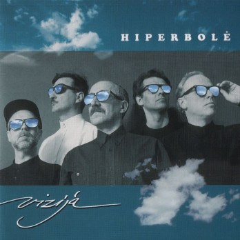
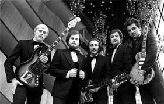
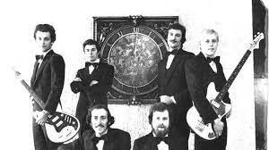
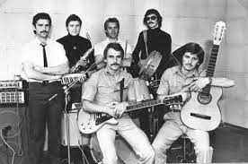

Hiperbolė
| 
|
Sudėtis
- Michailas Garberis – vokalas, gitara, grupės lyderis;
- Viktoras Prapras – vokalas, klavišiniai;
- Igoris Berinas – vokalas, gitara;
- Ričardas Bartusevičius – pritariantis vokalas, bosinė gitara;
- Arvydas Šnaras – pritariantis vokalas, mušamieji.
|
Grupės istorija prasidėjo 1974 m. pavasarį, kuomet Vilniaus inžinerinio statybų
instituto studentai Viktoras Prapras ir Ričardas Bartusevičius subūrė fakulteto muzikantų grupę. Pirmieji
pasirodymai vykdavo šokiuose. Repertuare skambėjo The Beatles, Creedence Clearwater Revival, Deep Purple, taip
pat kelios savos kūrybos dainos. Tų pačių metų rugsėjo 1 d. studentiškos vakaronės metu įvyko pirmasis rimtesnis
pasirodymas. Taip pat grupėje grojo Egidijus Prekevičius (klavišiniai), Arvydas Sriubas (solo gitara), Petras
Miežėnas (mušamieji). 1975 m. liepą grupės vadovu tapo Viktoras Prapras. Tais pačiais metais Ričardas
Bartusevičius prieš koncertą Aukštadvaryje iškilus būtinybei grupei sugalvojo pavadinimą – „Hiperbolė“, nors
kaip liaudies kolektyvo pavadinimas jis buvo suteiktas gerokai vėliau.
1979 m. Hiperbolė pradėjo sukti koncertinės veiklos link. Tuo metu grupę paliko
Arūnas Gruzdys. Susiformavo nuolatinė grupės sudėtis. 1980 m. grupė surengė 64 koncertus, 1982 m. – 104, o 1983
m. netgi – 156. Nariai patys prekiavo savo įrašais taip populiarindami savo muziką. Grupė pasiekė savo
populiarumo viršūnę, o 1984 m. tapo Filharmonijos kolektyvu. Deja, 1984 m. ši grupė kaip ir kitos roko grupės
buvo išformuotos valdžios struktūrų, kaip keliančios grėsmę komunistinei santvarkai.
1991 m. grupė atsikūrė, gerbėjai ją pasitiko su šūkiu „Hiperbolė – per amžius!“.
Per atgimimo turą buvo surengta 40 koncertų (Vilniuje buvo 6, Kaune – 7 anšlagai). Dėl nesėkmingos finansinės
padėties grupė buvo priversta vėl išsiskirstyti.
Antrasis sugrįžimas įvyko 1996 m., kurio metu vėl vyko minias pritraukę koncertai.
Per ketverius muzikinės veiklos metus Hiperbolė išleido dar keturis studijinius albumus.
|

|
Pamiršk mane - Igorio Berino daina, išleista 1994 m. |
|

|
Sugrįžk - Ričardo Bartusevičiaus daina, išleista 1994 m. |
|

|
Išgalvotas gyvenimas - Michailo Garberio daina, išleista 1995 m. |